전기산업기사 (2017-08-26 기출문제)
1과목: 전기자기학
1. 100kV로 충전된 8×103pF의 콘덴서가 축적할 수 있는 에너지는 몇 W 전구가 2초 동안 한 일에 해당하는가?
- 10
- 20
- 30
- 40
(정답률: 61%)

2. 제벡(Seebeck) 효과를 이용 한 것은?
- 광전지
- 열전대
- 전자냉동
- 수정 발전기
(정답률: 84%)
3. 마찰전기는 두 물체의 마찰열에 의해 무엇이 이동하는 것인가?
- 양자
- 자하
- 중성자
- 자유전자
(정답률: 85%)
4. 두 벡터 A=-7i-j, B=-3i-4j가 이루는 각은?
- 30°
- 45°
- 60°
- 90°
(정답률: 69%)
5. 그림과 같이 반지름 a[m], 중심간격 d[m]인 평행원통도체가 공기 중에 있다. 원통도체의 선전하밀도가 각각 ±pL[C/m]일 때 두 원통도체 사이의 단위 길이당 정전용량은 약 몇 F/m인가? (단, d≫a이다.)
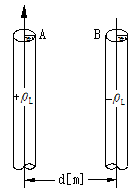
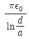
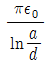
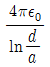
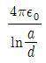
(정답률: 73%)
6. 횡전자파(TEM)의 특성은?
- 진행 방향의 E, H성분이 모두 존재한다.
- 진행 방향의 E, H성분이 모두 존재하지 않는다.
- 진행 방향의 E성분만 존재하고, H성분은 존재하지 않는다.
- 진행 방향의 H성분만 존재하고, E성분은 존재하지 않는다.
(정답률: 55%)
7. 반자성체가 아닌 것은?
- 은(Ag)
- 구리(Cu)
- 니켈(Ni)
- 비스무스(Bi)
(정답률: 77%)
8. 맥스웰 전자계의 기초 방정식으로 틀린 것은?
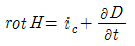
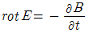
- divD=p
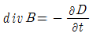
(정답률: 65%)
9. 무한히 긴 두 평행도선이 2㎝의 간격으로 가설되어 100A의 전류가 흐르고 있다. 두 도선의 단위 길이당 작용력은 몇 N/m인가?
- 0.1
- 0.5
- 1
- 1.5
(정답률: 50%)
10. -1.2C의 점전하가 5ax+2ay-3az[m/s]인 속도로 운동한다. 이 전하가 E=-18ax+5ay-10az[V/m] 전계에서 운동하고 있을 때 이 전하에 작용하는 힘은 약 몇 N인가?(오류 신고가 접수된 문제입니다. 반드시 정답과 해설을 확인하시기 바랍니다.)
- 21.1
- 23.5
- 25.4
- 27.3
(정답률: 52%)
11. 전계
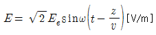
의 평면 전자파가 있다. 진공 중에서의 자계의 실효값은 약 몇 AT/m 인가?(오류 신고가 접수된 문제입니다. 반드시 정답과 해설을 확인하시기 바랍니다.)- 2.65×10-4Ee
- 2.65×10-3Ee
- 3.77×10-2Ee
- 3.77×10-1Ee
(정답률: 44%)
12. 전자석의 재료로 가장 적당한 것은?(오류 신고가 접수된 문제입니다. 반드시 정답과 해설을 확인하시기 바랍니다.)
- 잔류자기와 보자력이 모두 커야 한다.
- 잔류자기는 작고, 보자력은 커야 한다.
- 잔류자기와 보자력이 모두 작아야 한다.
- 잔류자기는 크고, 보자력은 작아야 한다.
(정답률: 68%)
13. 유전체내의 전계의 세기가 E, 분극의 세기가 P, 유전율이 E=E0Es인 유전체 내의 변위전류밀도는?
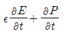
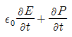
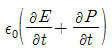
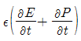
(정답률: 49%)
14. 점전하 +Q[C]의 무한평면도체에 대한 영상전하는?
- Q[C]와 같다.
- -Q[C]와 같다.
- Q[C] 보다 작다.
- Q[C] 보다 크다.
(정답률: 85%)
15. 두 코일 A, B의 자기 인덕턴스가 각각 3mH, 5mH라 한다. 두 코일을 직렬연결 시 자속이 서로 상쇄 되도록 했을 때의 합성 인덕턴스는 서로 증가하도록 연결했을 때의 60[%]이었다. 두 코일의 상호인덕턴스는 몇 mH 인가?
- 0.5
- 1
- 5
- 10
(정답률: 55%)
16. 고립 도체구의 정전용량이 50pF일 때 이 도체구의 반지름은 약 몇 ㎝ 인가?
- 5
- 25
- 45
- 85
(정답률: 61%)
17. N회 감긴 환상 솔레노이드의 단면적이 S[m2]이고 평균길이가 l[m] 이다. 이 코일의 권수를 반으로 줄이고 인덕턴스를 일정하게 하려면?
- 길이를 1/2로 줄인다.
- 길이를 1/4로 줄인다.
- 길이를 1/8로 줄인다.
- 길이를 1/16로 줄인다.
(정답률: 66%)
18. 고유저항이 p[Ωm], 한 변의 길이가 r[m]인 정육면체의 저항[Ω]은?
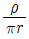
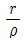
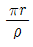
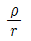
(정답률: 68%)
19. 내외 반지름이 각각 a, b 이고 길이가 l인 동축원통도체 사이에 도전율 б, 유전율 ε인 손실유전체를 넣고, 내원통과 외원통 간에 전압 V를 가했을 때 방사상으로 흐르는 전류 I는? 단, RC=pε이다
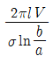
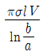
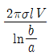
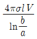
(정답률: 59%)
20. 콘덴서를 그림과 같이 접속했을 때 Cx의 정전용량은 몇 ㎌ 인가? (단, C1=C2=C3=3㎌이고, a-b 사이의 합성정전용량은 5㎌이다.)
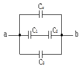
- 0.5
- 1
- 2
- 4
(정답률: 67%)
2과목: 전력공학
21. 전력계통에 과도안정도 향상 대책과 관련 없는 것은?
- 빠른 고장 제거
- 속응 여자시스템 사용
- 큰 임피던스의 변압기 사용
- 병렬 송전선로의 추가 건설
(정답률: 57%)
22. 다음 중 페란티 현상의 방지대책으로 적합하지 않은 것은?
- 선로전류를 지상이 되도록 한다.
- 수전단에 분로리액터를 설치한다.
- 동기조상기를 부족여자로 운전한다.
- 부하를 차단하여 무부하가 되도록 한다.
(정답률: 61%)
23. 보호계전기의 구비 조건으로 틀린 것은?
- 고장 상태를 신속하게 선택 할 것
- 조정 범위가 넓고 조정이 쉬울 것
- 보호동작이 정확하고 감도가 예민할 것
- 접점의 소모가 크고, 열적 기계적 강도가 클 것
(정답률: 72%)
24. 우리나라의 화력발전소에서 가장 많이 사용되고 있는 복수기는?
- 분사 복수기
- 방사 복수기
- 표면 복수기
- 증발 복수기
(정답률: 60%)
25. 뒤진 역률 80%, 1000kW의 3상 부하가 있다. 이것에 콘덴서를 설치하여 역률을 95%로 개선하려면 콘덴서의 용량은 약 몇 kVA로 해야 하는가?
- 240
- 420
- 630
- 950
(정답률: 64%)
26. 154kV 송전선로에 10개의 현수애자가 연결되어 있다. 다음 중 전압부담이 가장 적은 것은? (단, 애자는 같은 간격으로 설치되어 있다.)
- 철탑에 가장 가까운 것
- 철탑에서 3번째에 있는 것
- 전선에서 가장 가까운 것
- 전선에서 3번째에 있는 것
(정답률: 73%)
27. 교류송전에서는 송전거리가 멀어질수록 동일 전압에서의 송전 가능 전력이 적어진다. 그 이유로 가장 알맞은 것은?
- 표피효과가 커지기 때문이다.
- 코로나 손실이 증가하기 때문이다.
- 선로의 어드미턴스가 커지기 때문이다.
- 선로의 유도성 리액턴스가 커지기 때문이다.
(정답률: 61%)
28. 충전된 콘덴서의 에너지에 의한 트립되는 방식으로 정류기, 콘덴서 등으로 구성되어 있는 차단기의 트립방식은?
- 과전류 트립방식
- 콘덴서 트립방식
- 직류전압 트립방식
- 부족전압 트립방식
(정답률: 79%)
29. 어느 일정한 방향으로 일정한 크기 이상의 단락전류가 흘렀을 때 동작하는 보호계전기의 약어는?
- ZR
- UFR
- OVR
- DOCR
(정답률: 59%)
30. 전선의 자체 중량과 빙설의 종합하중을 W1, 풍압하중을 W2라 할 때 합성하중은?
- W1+W2
- W2-W1
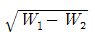
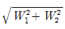
(정답률: 75%)
31. 보호계전기 동작속도에 관한 사항으로 한시 특성 중 반한시형을 바르게 설명한 것은?
- 입력 크기에 관계없이 정해진 한시에 동작하는 것
- 입력이 커질수록 짧은 한시에 동작하는 것
- 일정 입력(200%)에서 0.2초 이내로 동작하는 것
- 일정 입력(200%)에서 0.04초 이내로 동작하는 것
(정답률: 72%)
32. 다음 중 배전선로의 부하율이 F일 때 손실계수 H와의 관계로 옳은 것은?
- H=F
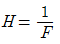
- H=F3
- 0≤F2≤H≤F≤1
(정답률: 73%)
33. 송전선에 낙뢰가 가해져서 애자에 섬락이 생기면 아크가 생겨 애자가 손상되는데 이것을 방지하기 위하여 사용하는 것은?
- 댐퍼(Damper)
- 아킹혼(Arcing horn)
- 아모로드(Armour rod)
- 가공지선(Overhead ground wire)
(정답률: 75%)
34. 154kV 3상 1회선 송전선로의 1선의 리액턴스가 10Ω, 전류가 200A 일 때 %리액턴스는?
- 1.84
- 2.25
- 3.17
- 4.19
(정답률: 52%)
35. 우리나라에서 현재 가장 많이 사용되고 있는 배전 방식은?
- 3상 3선식
- 3상 4선식
- 단상 2선식
- 단상 3선식
(정답률: 76%)
36. 조상설비가 아닌 것은?
- 단권변압기
- 분로리액터
- 동기조상기
- 전력용콘덴서
(정답률: 62%)
37. 단거리 송전선의 4단자 정수 A,B,C,D 중 그 값이 0인 정수는?
- A
- B
- C
- D
(정답률: 70%)
38. 전원측과 송전선로의 합성 %Zs가 10MVA 기준용량으로 1%의 지점에 변전설비를 시설하고자 한다. 이 변전소에 정격용량 6MVA의 변압기를 설치할 때 변압기 2차측의 단락용량은 몇 MVA 인가? (단, 변압기의 %Zt는 6.9% 이다.)
- 80
- 100
- 120
- 140
(정답률: 37%)
39. 그림과 같은 단상 2선식 배선에서 인입구 A점의 전압이 220V라면 C점의 전압[V]은? (단, 저항값은 1선의 값이며 AB간은 0.⑤Ω, BC간은 0.1Ω 이다.)
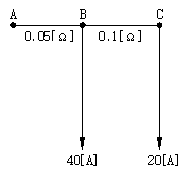
- 214
- 210
- 196
- 192
(정답률: 53%)
40. 파동임피던스가 300Ω인 가공송전선 1km 당의 인덕턴스는 몇 mH/km 인가? (단, 저항과 누설콘덕턴스는 무시한다.)
- 0.5
- 1
- 1.5
- 2
(정답률: 46%)
3과목: 전기기기
41. 3상 전원의 수전단에서 전압 3300V, 전류 1000A, 뒤진 역률 0.8의 전력을 받고 있을 때 동기 조상기로 역률을 개선하여 1로 하고자 한다. 필요한 동기조상기의 용량은 약 몇 kVA인가?
- 1525
- 1950
- 3150
- 3429
(정답률: 43%)
42. 기동장치를 갖는 단상 유도전동기가 아닌 것은?
- 2중 농형
- 분상기동형
- 반발기동형
- 셰이딩코일형
(정답률: 63%)
43. 일반적인 직류전동기의 정격표시 용어로 틀린 것은?
- 연속정격
- 순시정격
- 반복정격
- 단시간정격
(정답률: 51%)
44. 직류전동기의 속도제어 방법 중 광범위한 속도 제어가 가능하며 운전 효율이 높은 방법은?
- 계자제어
- 전압제어
- 직렬저항제어
- 병렬저항제어
(정답률: 78%)
45. 트라이액(triac)에 대한 설명으로 틀린 것은?
- 쌍방향성 3단자 사이리스터이다.
- 턴오프 시간이 SCR보다 짧으며 급격한 전압변동에 강하다.
- SCR 2개를 서로 반대방향으로 병렬 연결하여 양방향 전류제어가 가능하다.
- 게이트에 전류를 흘리면 어느 방향이든 전압이 높은 쪽에서 낮은 쪽으로 도통한다.
(정답률: 52%)
46. 탭전환 변압기 1차측에 몇 개의 탭이 있는 이유는?
- 예비용 단자
- 부하전류를 조정하기 위하여
- 수전점의 전압을 조정하기 위하여
- 변압기의 여자전류를 조정하기 위하여
(정답률: 57%)
47. 스테핑전동기의 스텝각이 3°이고, 스테핑주파수(pulse rate)가 1200pps이다. 이 스테핑전동기의 회전속도[rps]는?
- 10
- 12
- 14
- 16
(정답률: 47%)
48. 직류기의 전기자 반작용의 영향이 아닌 것은?
- 주자속이 증가한다.
- 전기적 중성축이 이동한다.
- 정류작용에 악영향을 준다.
- 정류자 편간전압이 상승한다.
(정답률: 57%)
49. 유도전동기 역상제동의 상태를 크레인이나 권상기의 강하 시에 이용하고 속도제한의 목적에 사용되는 경우의 제동방법은?
- 발전제동
- 유도제동
- 회생제동
- 단상제동
(정답률: 48%)
50. 단락비가 큰 동기기의 특징 중 옳은 것은?
- 전압 변동률이 크다.
- 과부하 내량이 크다.
- 전기자 반작용이 크다.
- 송전선로의 충전 용량이 작다.
(정답률: 49%)
51. 전류가 불연속인 경우 전원전압 220V인 단상 전파정류 회로에서 점호각 α=90°일 때의 직류 평균전압은 약 몇 V 인가?
- 45
- 84
- 90
- 99
(정답률: 60%)
52. 변압기의 냉각방식 중 유입자냉식의 표시 기호는?
- ANAN
- ONAN
- ONAF
- OFAF
(정답률: 66%)
53. 타여자 직류전동기의 속도제어에 사용되는 워드 레오나드(Ward Leonard) 방식은 다음 중 어느 제어법을 이용한 것인가?
- 저항제어법
- 전압제어법
- 주파수제어법
- 직병렬제어법
(정답률: 70%)
54. 단상변압기 2대를 사용하여 3150V의 평형 3상에서 210V의 평형 2상으로 변환하는 경우에 각 변압기의 1차 전압과 2차 전압은 얼마인가?
- 주좌 변압기 : 1차 3150V, 2차 210V, T좌 변압기 : 1차 3150V, 2차 210V
- 주좌 변압기 : 1차 3150V, 2차 210V, T좌 변압기 : 1차
 , 2차 210V
, 2차 210V - 주좌 변압기 : 1차
 , 2차 210V, T좌 변압기 : 1차
, 2차 210V, T좌 변압기 : 1차  , 2차 210V
, 2차 210V - 주좌 변압기 : 1차
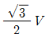
, 2차 210V,T좌 변압기 : 1차 3150V, 2차 210V
(정답률: 67%)
55. 3상 유도전동기의 속도제어법 중 2차 저항제어와 관계가 없는 것은?
- 농형 유도전동기에 이용된다.
- 토크 속도특성의 비례추이를 응용한 것이다.
- 2차 저항이 커져 효율이 낮아지는 단점이 있다.
- 조작이 간단하고 속도제어를 광범위하게 행할 수 있다.
(정답률: 46%)
56. 직류발전기의 무부하 특성곡선은 다음 중 어느 관계를 표시한 것인가?
- 계자전류 – 부하전류
- 단자전압 – 계자전류
- 단자전압 – 회전속도
- 부하전류 – 단자전압
(정답률: 68%)
57. 용량이 50kVA 변압기의 철손이 1kW 이고 전부하동손이 2kW이다. 이 변압기를 최대효율에서 사용하라면 부하를 약 몇 kVA 인가하여야 하는가?
- 25
- 35
- 50
- 71
(정답률: 55%)
58. 농형 유도전동기 기동법에 대한 설명 중 틀린 것은?
- 전전압 기동법은 일반적으로 소용량에 적용된다.
- Y-△ 기동법은 기동전압[V]이
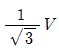
로 감소한다. - 리액터 기동법은 기동 후 스위치로 리액터를 단락한다.
- 기동보상기법은 최종속도 도달 후에도 기동보상기가 계속 필요하다.
(정답률: 48%)
59. 3상 반작용 전동기(reaction motor)의 특성으로 가장 옳은 것은?
- 역률이 좋은 전동기
- 토크가 비교적 큰 전동기
- 기동용 전동기가 필요한 전동기
- 여자권선 없이 동기속도로 회전하는 전동기
(정답률: 46%)
60. 2대의 3상 동기발전기를 동일한 부하로 병렬운전하고 있을 때 대응하는 기전력사이에 60°의 위상차가 있다면 한 쪽 발전기에서 다른 쪽 발전기에 공급되는 1상당 전력은 약 몇 kW인가? (단, 각 발전기의 기전력(선간)은 3300V, 동기 리액턴스는 5Ω이고 전기자 저항은 무시한다.)
- 181
- 314
- 363
- 720
(정답률: 54%)
4과목: 회로이론
61. 코일에 단상 100V의 전압을 가하면 30A의 전류가 흐르고 1.8kW의 전력을 소비한다고 한다. 이 코일과 병렬로 콘덴서를 접속하여 회로의 역률을 100%로 하기 위한 용량 리액턴스는 약 몇 Ω 인가?
- 4.2
- 6.2
- 8.2
- 10.2
(정답률: 45%)
62. 그림과 같은 회로에서 저항 r1,r2에 흐르는 전류의 크기가 1:2의 비율이라면 r1,r2는 각각 몇 Ω 인가?
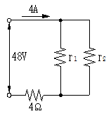
- r1=6, r2=3
- r1=8, r2=4
- r1=16, r2=8
- r1=24, r2=12
(정답률: 63%)
63. 회로에서 스위치를 닫을 때 콘덴서의 초기전하를 무시하면 회로에 흐르는 전류 i(t)는 어떻게 되는가?
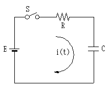
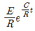
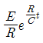
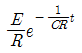
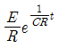
(정답률: 68%)
64. 다음 그림과 같은 전기회로의 입력을 ei, 출력을 e0라고 할 때 전달함수는?
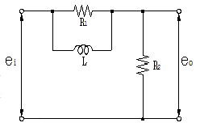
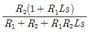
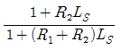
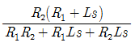
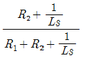
(정답률: 62%)
65. 3대의 단상 변압기를 △결선으로 하여 운전하던 중 변압기 1대가 고장으로 제거하여 V결선으로 한 경우 공급할 수 있는 전력은 고장 전 전력의 몇 %인가?
- 57.7
- 50.0
- 63.3
- 67.7
(정답률: 78%)
66. 3상 회로의 영상분, 정상분, 역상분을 각각 I0, I1, I2라 하고 선전류를 Ia, Ib, Ic라 할 때 Ib는? (단,
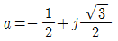
이다.)- I0+I1+I2
- I0+a2I1+aI2
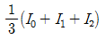
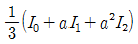
(정답률: 62%)
67. 전압의 순시값이 v=3+10√2sinwt[V] 일 때 실효값은 약 몇 V 인가?
- 10.4
- 11.6
- 12.5
- 16.2
(정답률: 62%)
68. 시간지연 요인을 포함한 어떤 특정계가 다음 미분방정식
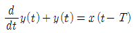
로 표현된다. x(t)를 입력, y(t)를 출력이라 할 때 이 계의 전달함수는?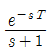
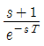
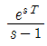
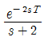
(정답률: 55%)
69. 다음과 같은 회로에서 단자 a, b 사이의 합성저항Ω은?
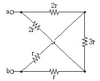
- r
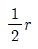
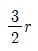
- 3r
(정답률: 68%)
70. 4단자 회로망이 가역적이기 위한 조건으로 틀린 것은?
- Z12=Z21
- Y12=Y21
- H12=-H21
- AB-CD=1
(정답률: 70%)
71. 그림과 같은 회로에서 유도성 리액턴스 XL의 값[Ω]은?
- 8
- 6
- 4
- 1
(정답률: 60%)
72. 그림과 같은 단일 임피던스 회로의 4단자 정수는?
- A=Z, B=0, C=1, D=0
- A=0. B=1, C=Z, D=1
- A=1, B=Z, C=0, D=1
- A=1, B=0, C=1, D=Z
(정답률: 72%)
73. 저항 3개를 Y로 접속하고 이것을 선간전압 200V의 평형 3상 교류 전원에 연결할 때 선전류가 20A 흘렀다. 이 3개의 저항을 △로 접속하고 동일전원에 연결하였을 때의 선전류는 몇 A 인가?
- 30
- 40
- 50
- 60
(정답률: 61%)
74. R=4000Ω, L=5H의 직렬회로에 직류전압 200V를 가할 때 급히 단자 사이의 스위치를 단락시킬 경우 이로부터 1/800초 후 회로의 전류는 몇 mA인가?
- 18.4
- 1.84
- 28.4
- 2.84
(정답률: 40%)
75. 다음과 같은 파형을 푸리에 급수로 전개하면?
(정답률: 66%)
76. i1=Imsinwt[A]와 i2=Imcoswt[A]인 두 교류 전류의 위상차는 몇 도인가?
- 0°
- 30°
- 60°
- 90°
(정답률: 63%)
77. R-L 직렬회로에서 e=10+100√2sinwt+50√2sin(3wt+60°)+60√2sin(5wt+30°)[V] 인 전압을 가할 때 제 3고조파 전류의 실효값은 몇 A 인가? (단, R=8Ω, wL=2Ω 이다.)
- 1
- 3
- 5
- 7
(정답률: 63%)
78. 대칭 n상 Y결선에서 선간전압의 크기는 상전압의 몇 배인가?
(정답률: 60%)
79. 다음 함수 의 역라플라스 변환은?
- 2+3e-t
- 3+2e-t
- 3-e-t
- 2-3e-t
(정답률: 54%)
80. 그림과 같은 회로가 공진이 되기 위한 조건을 만족하는 어드미턴스는?
(정답률: 56%)
5과목: 전기설비기술기준 및 판단 기준
81. 저압 절연전선을 사용한 220V 저압 가공전선이 안테나와 접근상태로 시설되는 경우 가공전선과 안테나 사이의 이격거리는 몇 ㎝ 이상이어야 하는가? (단, 전선이 고압 절연전선, 특고압 절연전선 또는 케이블인 경우는 제외한다.)
- 30
- 60
- 100
- 120
(정답률: 58%)
82. 금속덕트에 넣은 전선의 단면적의 합계는 덕트의 내부 단면적의 몇 % 이하이어야 하는가?
- 10
- 20
- 32
- 48
(정답률: 69%)
83. 지선을 사용하여 그 강도를 분담시키면 안 되는 가공전선로의 지지물은?
- 목주
- 철주
- 철탑
- 철근 콘크리트주
(정답률: 70%)
84. 저압 가공인입선 시설 시 도로를 횡단하여 시설하는 경우 노면상 높이는 몇 m 이상으로 하여야 하는가?
- 4
- 4.5
- 5
- 5.5
(정답률: 62%)
85. 60kV 이하의 특고압 가공전선과 식물과의 이격거리는 몇 m 이상이어야 하는가?
- 2
- 2.12
- 2.24
- 2.36
(정답률: 52%)
86. 전기부식방지 시설에서 전원장치를 사용하는 경우로 옳은 것은?
- 전기부식방지 회로의 사용전압은 교류 60V 이하일 것
- 지중에 매설하는 양극(+)의 매설깊이는 50㎝ 이상일 것
- 지표 또는 수중에서 1m 간격의 임의의 2점간의 전위차는 7V를 넘지 말 것
- 수중에 시설하는 양극(+)과 그 주위 1m 이내의 거리에 있는 임의점과의 사이의 전위차는 10V를 넘지 말 것
(정답률: 47%)
87. 400V 미만인 저압용 전동기 외함을 접지공사 할 경우 접지선의 공칭단면적은 몇 mm2 이상의 연동선이어야 하는가?
- 0.75
- 2.5
- 6
- 16
(정답률: 51%)
88. 345kV 변전소의 충전 부분에서 5.98m 거리에 울타리를 설치할 경우 울타리 최소 높이는 몇 m 인가?
- 2.1
- 2.3
- 2.5
- 2.7
(정답률: 55%)
89. 동기발전기를 사용하는 전력계통에 시설하여야 하는 장치는?
- 비상 조속기
- 분로 리액터
- 동기검정장치
- 절연유 유출방지설비
(정답률: 59%)
90. 특고압 가공전선로의 지지물에 시설하는 통신선 또는 이에 직접 접속하는 통신선 중 옥내에 시설하는 부분은 몇 V 이상의 저압 옥내배선의 규정에 준하여 시설하도록 하고 있는가?
- 150
- 300
- 380
- 400
(정답률: 37%)
91. 제2종 특고압 보안공사 시 B종 철주를 지지물로 사용하는 경우 경간은 몇 m 이하인가?
- 100
- 200
- 400
- 500
(정답률: 58%)
92. 전체의 길이가 18m이고, 설계하중이 6.8kN인 철근 콘크리트주를 지반이 튼튼한 곳에 시설하려고 한다. 기초 안전율을 고려하지 않기 위해서는 묻히는 깊이를 몇 m 이상으로 시설하여야 하는가?
- 2.5
- 2.8
- 3
- 3.2
(정답률: 44%)
93. 변전소를 관리하는 기술원이 상주하는 장소에 경보장치를 시설하지 아니하여도 되는 것은?
- 조상기 내부에 고장이 생긴 경우
- 주요 변압기의 전원측 전로가 무전압으로 된 경우
- 특고압용 타냉식변압기의 냉각장치가 고장 난 경우
- 출력 2000kVA 특고압용 변압기의 온도가 현저히 상승한 경우
(정답률: 50%)
94. 케이블 트레이 공사에 대한 설명으로 틀린 것은?
- 금속재의 것은 내식성 재료의 것이어야 한다.
- 케이블 트레이의 안전율은 1.25 이상이어야 한다.
- 비금속제 케이블 트레이는 난연성 재료의 것 이어야 한다.
- 전선의 피복 등을 손상시킬 돌기 등이 없이 매끈하여야 한다.
(정답률: 64%)
95. 의료장소의 수술실에서 전기설비의 시설에 대한 설명으로 틀린 것은?
- 의료용 절연변압기의 정격출력은 10kVA 이하로 한다.
- 의료용 절연변압기의 2차측 정격전압은 교류 250V 이하로 한다.
- 절연감시장치를 설치하는 경우 누설전류가 5mA에 도달하면 경보를 발하도록 한다.
- 전원측에 강화절연을 한 의료용 절연변압기를 설치하고 그 2차측 전로는 접지한다.
(정답률: 50%)
96. 전등 또는 방전등에 저압으로 전기를 공급하는 옥내의 전로의 대지전압은 몇 V 이하이어야 하는가?
- 100
- 200
- 300
- 400
(정답률: 71%)
97. 저압 가공인입선 시설 시 사용할 수 없는 전선은?
- 절연전선, 다심형 전선, 케이블
- 지름 2.6㎜ 이상의 인입용 비닐절연전선
- 인장강도 1.2kN 이상의 인입용 비닐절연전선
- 사람의 접촉우려가 없도록 시설하는 경우 옥외용 비닐절연 전선
(정답률: 44%)
98. 전용부지가 아닌 가공 직류 전차선의 레일면상의 높이는 몇 m 이상으로 하여야 하는가?
- 3.6
- 4
- 4.4
- 4.8
(정답률: 48%)
99. 고압 가공전선로의 가공지선으로 나경동선을 사용하는 경우의 지름은 몇 ㎜ 이상이어야 하는가?
- 3.2
- 4
- 5.5
- 6
(정답률: 54%)
100. 저압의 옥측배선 또는 옥외배선 시설로 틀린 것은?(오류 신고가 접수된 문제입니다. 반드시 정답과 해설을 확인하시기 바랍니다.)
- 400V 이상 저압의 전개된 장소에 애자사용 공사로 시설
- 합성수지관 또는 금속관, 가요전선관 공사로 시설
- 400V 이상 저압의 점검 가능한 은폐장소에 버스덕트 공사로 시설
- 옥내전로의 분기점에서 10m 이상인 저압의 옥측배선 또는 옥외배선의 개폐기를 옥내 전로용과 겸용으로 시설
(정답률: 43%)
E = 1/2CV^2
여기서 C는 콘덴서의 용량, V는 충전된 전압이다. 따라서,
E = 1/2 × 8×10^3 × (100×10^3)^2 = 4×10^11 J
한편, 전력은 일의 양을 시간으로 나눈 것이므로,
P = W/t
여기서 W는 일의 양, t는 시간이다. 따라서,
W = Pt
주어진 문제에서 전구가 2초 동안 한 일을 구하라고 했으므로, W는 다음과 같다.
W = Pt = 20P
따라서, 콘덴서가 축적할 수 있는 에너지를 20으로 나누면 된다.
4×10^11 J ÷ 20 = 2×10^10 J
이 값은 2×10^10 J = 20 GJ로 나타낼 수 있다. 따라서 정답은 "20"이다.